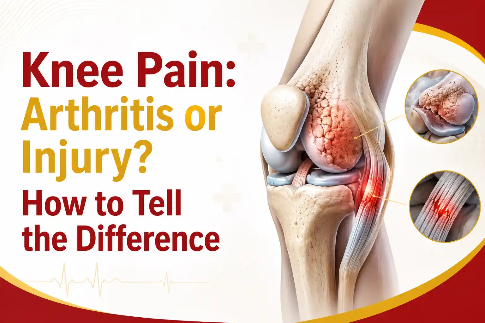

Medically Reviewed by
DR. MIR JAWAD ZAR KHANMBBS, MS - Orthopedic
M.CH-(Ortho) Joint
Replacement surgeon
Knee Pain: Arthritis or Injury? How to Tell the Difference
Knee joint pain is one of the most common reasons people book an appointment with an orthopedic doctor, yet many are unsure what is actually causing it. Is the ache slowly creeping in with age, or did it start after a fall, a twist, or a hard landing on the sports field? Telling the two apart matters, because arthritis knee pain and injury-related pain are managed in very different ways. This guide, based on the clinical experience of Dr. Mir Jawad Zar Khan, senior orthopedic and joint replacement surgeon and Chairman of Germanten Hospitals in Hyderabad, walks you through the signs, so you know what your knee may be trying to tell you.
Why the cause of your knee pain matters
The knee is a hinge joint where the thigh bone, shin bone, and kneecap meet, held together by ligaments and cushioned by smooth cartilage. When something goes wrong, the pain can feel similar whether the problem is slow wear or a sudden injury. But the right treatment depends entirely on the cause. Arthritis is a gradual, degenerative process that usually needs long-term management. An injury is a specific event that may need rest, rehabilitation, or in some cases a repair procedure. Guessing wrong can mean months of the wrong care, so an accurate diagnosis is the real starting point.
Understanding arthritis knee pain
Arthritis means inflammation of a joint. In the knee, the most common form is osteoarthritis, where the protective cartilage gradually thins until the bones begin to rub. The second common form is rheumatoid arthritis, an autoimmune condition where the body attacks its own joint lining. Arthritis knee pain shares a recognisable pattern:
- It comes on slowly, over months or years, rather than in a single moment.
- The joint often feels stiff in the morning or after sitting for a while, then eases as you move.
- You may hear or feel a grinding or creaking sensation, known as crepitus.
- It frequently affects both knees, though one may be worse.
- It tends to worsen gradually and is closely linked to age, body weight, previous joint stress, and family history.
Osteoarthritis of the knee is very common in India. A large multi-city Indian study found an overall knee osteoarthritis prevalence of around 28.7 percent, with higher rates in women and a clear rise with age and body weight. In other words, if you are over 45 and the pain has been building slowly, arthritis is a strong possibility.
Knee pain when sitting cross-legged or squatting
Many people in India first notice knee trouble when sitting cross-legged on the floor, squatting, or getting up from a low seat. These deep-bend positions load the knee heavily, and they often expose early cartilage wear before pain appears during normal walking. If sitting cross-legged has become uncomfortable, or you find yourself avoiding the floor, it is worth having the joint checked. This kind of position-related pain leans more towards arthritis or cartilage wear than a fresh injury, especially when it builds up over time rather than starting suddenly.
Understanding injury-related knee pain
Injury pain is usually a different story. It tends to arrive with a clear cause and a clear moment. Common knee injuries include ligament tears such as an ACL tear, meniscus (cartilage cushion) tears, and sprains or strains from a fall, an awkward twist, sports, or a road accident. The signs often include:
- A sudden onset, frequently tied to a specific event you can remember.
- A pop or snapping sensation at the moment it happened, in some ligament tears.
- Rapid swelling, sometimes within hours.
- A feeling that the knee is unstable, giving way, or locking.
- Pain that is sharp and localised to the injured area rather than spread across the whole joint.
Injuries usually affect one knee, the one that took the force. They may improve with rest or, depending on what was damaged, may need imaging and a targeted treatment plan. A twisted knee that swells quickly and feels unstable should always be assessed, because a missed ligament or meniscus tear can lead to further damage over time.
Arthritis vs injury: a quick comparison
The table below summarises the differences most patients ask about. It is a guide, not a diagnosis, and any persistent knee joint pain deserves a professional assessment.
| What to look at | Points to arthritis | Points to injury |
|---|---|---|
| How it started | Slowly, over months or years | Suddenly, often after one event |
| Usual trigger | Age, wear, weight, genetics | Fall, twist, sports, accident |
| Which knee | Often both knees | Usually one knee |
| Stiffness | Worse in the morning or after rest | Tied to the injured structure |
| Swelling | Mild, comes and goes | Often rapid after the injury |
| Sound | Grinding or creaking (crepitus) | A pop at the moment of injury |
| Over time | Slowly worsens | May settle or worsen by damage |
Warning signs you should not ignore
Some knee symptoms need prompt attention regardless of the cause. See an orthopedic doctor without delay if you notice any of the following:
- The knee cannot bear weight, or gives way when you stand.
- Sudden, severe swelling, or the knee looks deformed after an injury.
- The joint locks or gets stuck and will not straighten.
- Redness, warmth, and fever with the pain, which can signal infection.
- Pain that keeps you awake at night or is not improving after two to three weeks of rest.
How doctors find the real cause of knee joint pain
A good diagnosis starts with listening. Dr. Jawad and his team begin by asking how and when the pain started, what makes it better or worse, and how it affects daily activities such as climbing stairs or sitting on the floor. A physical examination checks the range of movement, stability, swelling, and the exact spot that hurts. Imaging then confirms the picture. X-rays show joint space narrowing and bone changes typical of arthritis, while an MRI is better for soft-tissue injuries such as ligament and meniscus tears. In some cases a blood test helps identify inflammatory or rheumatoid arthritis. This step-by-step approach avoids unnecessary tests and points straight to the right treatment.
Treatment depends on the diagnosis
Once the cause is clear, the paths separate. Most arthritis and many injuries improve with non-surgical care first, and surgery is considered only when it is truly needed.
- Arthritis care usually starts with weight management, targeted physiotherapy, activity changes, pain-relieving medication, and, in selected cases, joint injections. For advanced arthritis that no longer responds, joint replacement may be discussed.
- Injury care depends on the structure damaged. A minor sprain may need rest, ice, and rehabilitation, while a significant ligament or meniscus tear may need arthroscopic (keyhole) repair followed by structured recovery.
The reassuring part is that most knee conditions do not need an operation. A wide range of conservative options can calm inflammation, build strength, and restore function when started early. You can read more on the non-surgical knee pain treatment page and the knee arthroscopy page on this website.
Conclusion
Arthritis and injury can feel alike, but they usually leave different clues. Arthritis knee pain builds slowly, brings morning stiffness and grinding, and often affects both knees. Injury pain tends to start with a clear event, swells quickly, and may make the knee feel unstable. Reading these signals early helps you get the right care sooner and protects the joint for the long term. When in doubt, do not wait for the pain to decide for you.
Consult a knee specialist in Hyderabad
If your knee joint pain is not settling, book a consultation with Dr. Mir Jawad Zar Khan at Germanten Hospitals, Hyderabad. With training in Germany and more than 10,000 joint procedures, Dr. Jawad offers an accurate diagnosis and a treatment plan that starts with the least invasive option that will work for you.
Book Your Consultation TodayFrequently asked questions
Can arthritis and an old injury both cause my knee pain?
Yes. A previous injury, such as an untreated ligament or meniscus tear, can lead to post-traumatic arthritis years later. This is one reason injuries should be assessed and managed properly at the time.
Is knee pain when sitting cross-legged always arthritis?
Not always, but position-related pain that builds up gradually often points to early cartilage wear or arthritis. Sudden pain in that position, especially with a twist, can also be an injury. An examination settles the question.
At what age does arthritis knee pain usually begin?
Osteoarthritis becomes more common from the mid-forties onwards and rises with age, though earlier onset is possible after injury or with a family history. Younger patients with knee pain are more often dealing with an injury.
Do I need an MRI for knee pain?
Not always. Many cases are diagnosed with an examination and an X-ray. An MRI is added when a soft-tissue injury such as a ligament or meniscus tear is suspected.
When should I stop treating knee pain at home?
If pain lasts beyond two to three weeks, keeps returning, or comes with swelling, instability, or locking, it is time for a professional assessment rather than continued self-care.
References
- Pal CP et al. Epidemiology of knee osteoarthritis in India and related factors. Indian Journal of Orthopaedics, 2016.
- Knee osteoarthritis prevalence and risk factors, rural South India. NIH PMC.
- AAOS OrthoInfo, Arthritis and knee conditions overview.


DR. MIR JAWAD ZAR KHAN
MBBS, MS - Orthopedic, M.CH-(Ortho) Joint Replacement Surgeon
As the visionary Chairman and Managing Director of Germanten Hospitals, Hyderabad, Dr. Mir Jawad Zar Khan brings over two decades of surgical leadership to the field. He is dedicated to transforming lives through evidence-based treatments, advanced robotic technology, and a commitment to patient quality of life.